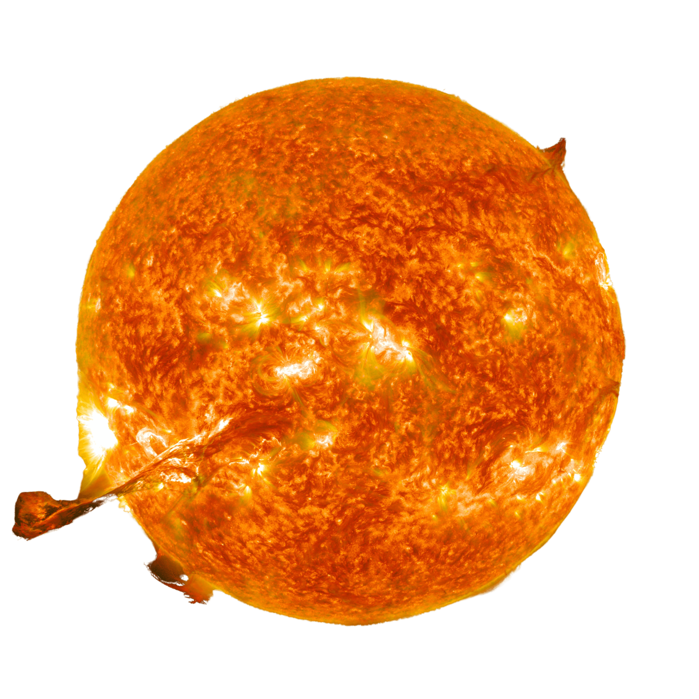
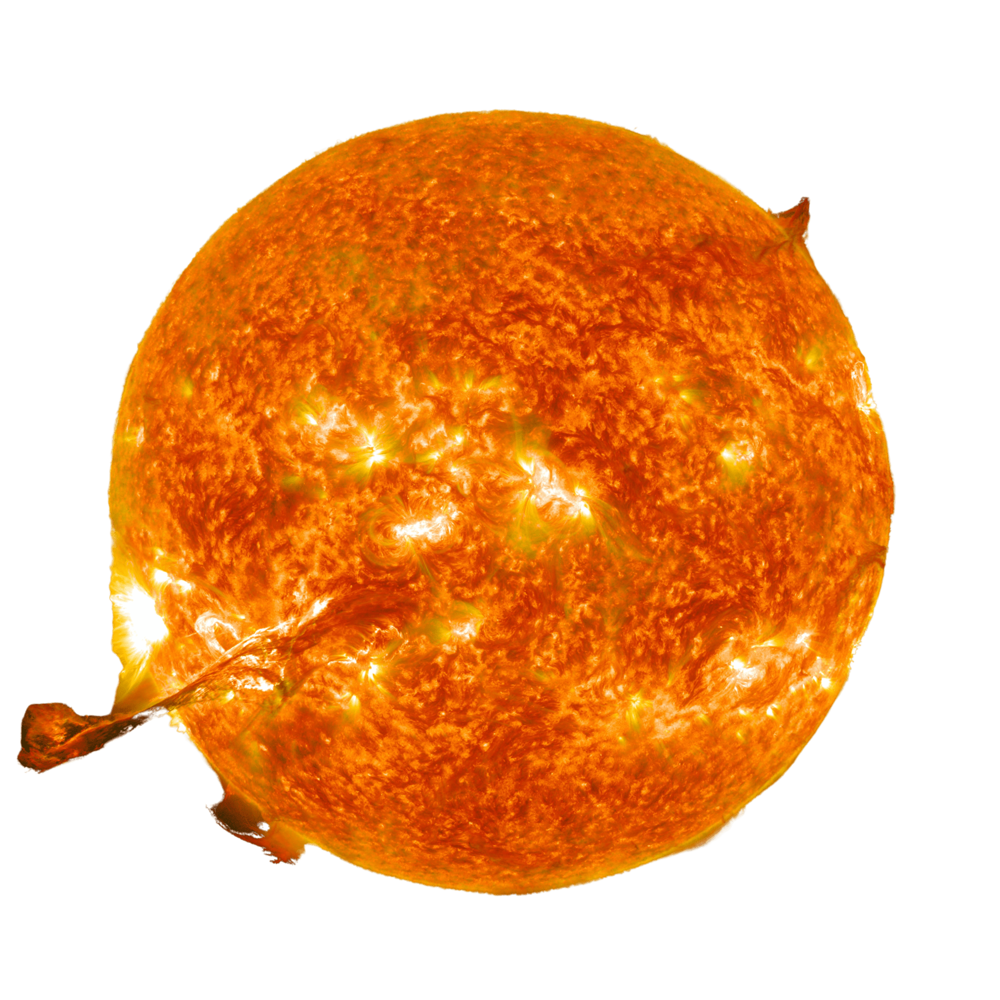
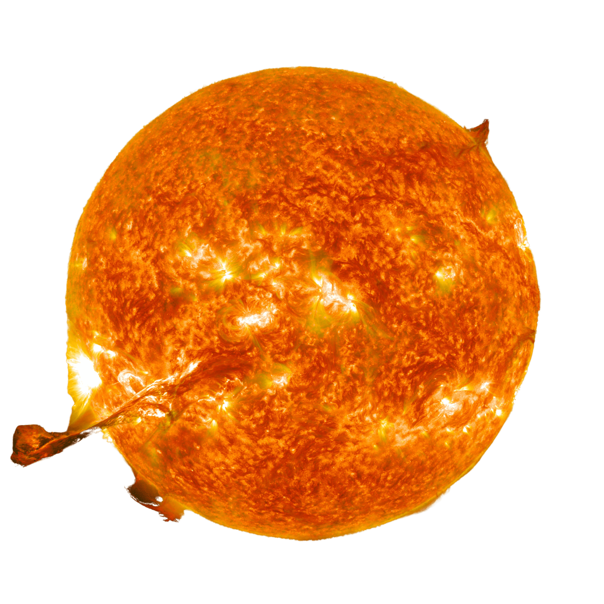
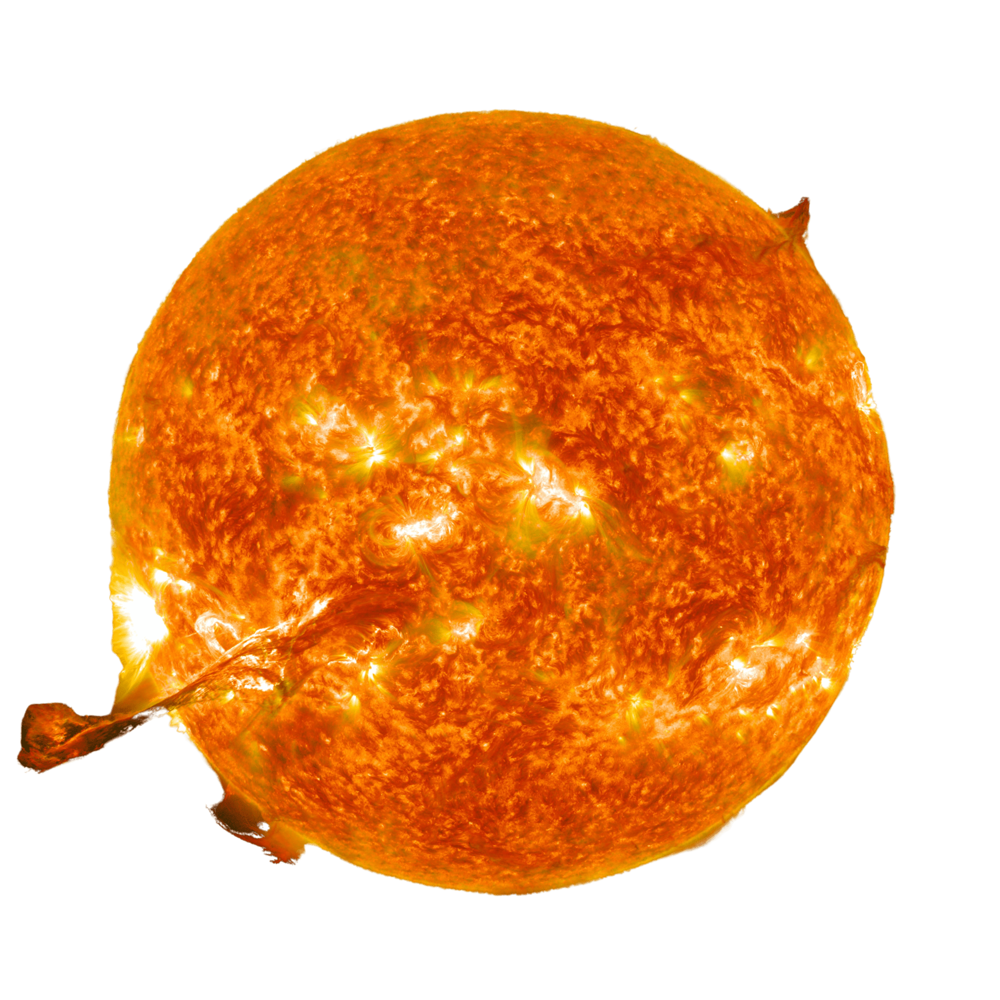

MagnetiX

 

 

Magnetic reconnection (MR) is a process in which opposing magnetic field lines merge. If magnetic reconnection occurs between the interplanetary magnetic field (IMF) and Earth’s magnetic field, solar-wind plasma particles are permitted to enter the region of space near Earth (the geospace), potentially causing space weather events that could impact satellites in Earth orbit, as well as power systems on Earth. Your challenge is to develop a computer program for the public that analyzes the IMF vector components measured by spacecraft to assess how often magnetic reconnection occurs.